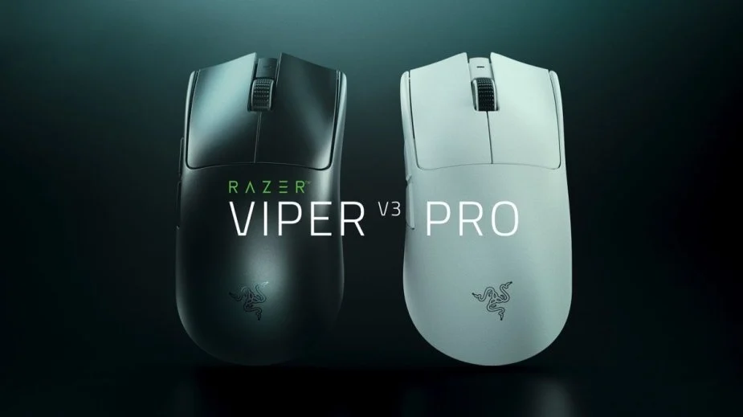
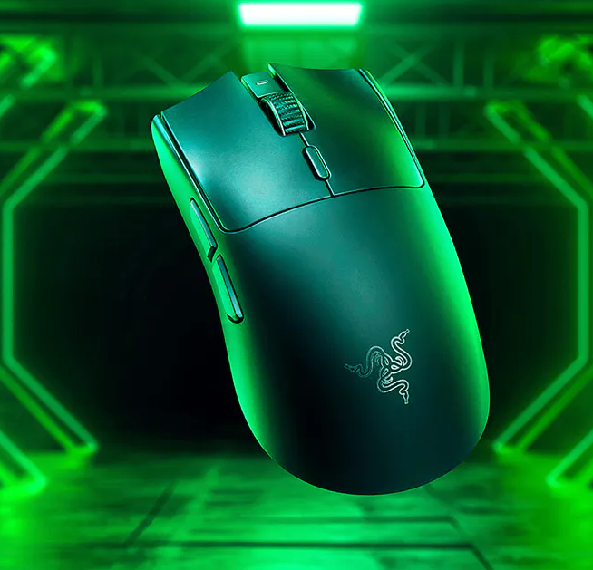
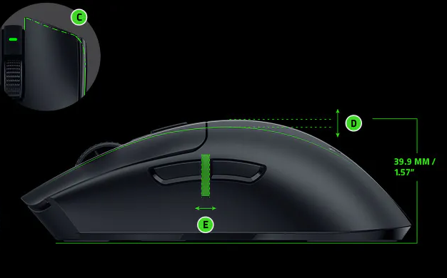

Razer Viper V3 Pro
mysz e-sportowa

Matt
20.09.2024
Viper V3 Pro
Sprzęt
Razer Viper V3 Pro to najnowocześniejsza bezprzewodowa mysz do gier zaprojektowana specjalnie dla profesjonalistów esportu i poważnych graczy. Dzięki ultralekkiej konstrukcji, zaawansowanemu czujnikowi optycznemu Focus Pro 35 000 CPI i częstotliwości odpytywania 8000 Hz ta mysz została zaprojektowana tak, aby zapewniać niezrównaną wydajność i precyzję.
Viper V3 Pro ma symetryczną, praworęczną konstrukcję, zoptymalizowaną pod kątem chwytu pazurami i czubkami palców. Mysz waży zaledwie 54 gramy, co czyni ją jedną z najlżejszych bezprzewodowych myszy do gier na rynku. Ergonomiczna konstrukcja zapewnia wygodne dopasowanie do większości rozmiarów dłoni, z podniesionym, przesuniętym do tyłu garbem i występem na palec serdeczny, aby zapobiec przytrzaśnięciu palców.
Viper V3 Pro jest wyposażony w zaawansowany czujnik optyczny Focus Pro 35 000 CPI, który zapewnia dokładne i precyzyjne śledzenie nawet przy dużych prędkościach. Mysz ma również przyspieszenie 70G i prędkość śledzenia 750 IPS, co czyni ją idealną do szybkich gier wymagających szybkich refleksów.
Viper V3 Pro jest wykorzystuje opatentowaną technologię bezprzewodową HyperPolling firmy Razer, która zapewnia częstotliwość raportowania 1 ms i częstotliwość odpytywania 8000 Hz. Oznacza to, że mysz może przesyłać dane do komputera do 8000 razy na sekundę, zapewniając płynne i wolne od opóźnień wrażenia z gry.
Viper V3 Pro ma żywotność baterii do 95 godzin przy 1000 Hz, 62 godziny przy 2000 Hz, 40 godzin przy 4000 Hz i 17 godzin przy 8000 Hz. Mysz ma również wskaźnik żywotności baterii, który ostrzega użytkownika, gdy bateria jest bliska wyczerpania.
Viper V3 Pro można dostosować za pomocą oprogramowania Synapse firmy Razer, które umożliwia użytkownikom dostosowanie ustawień, takich jak DPI, częstotliwość odpytywania i mapowanie przycisków. Mysz ma również programowalny przycisk DPI, który umożliwia użytkownikom przełączanie się między różnymi ustawieniami DPI w locie.
Plusy
- Ultralekka konstrukcja
- Zaawansowany czujnik optyczny Focus Pro 35 000 CPI
- Częstotliwość odpytywania 8000 Hz
- Długa żywotność baterii
- Możliwość dostosowania za pomocą oprogramowania Razer Synapse
Minusy
- Drogi
- Brak oświetlenia RGB
- Podatny na odciski palców